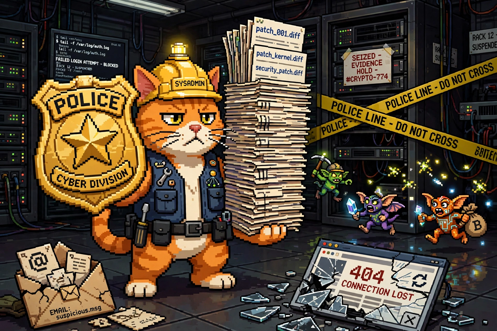

Cyber SOTU: The Week the Cops Seized the Servers (Nov 8–15, 2026)

The cat brought the badge and the patch stack. The gremlins brought the Monero miner. That's basically this entire week.
Welcome back to the Cyber SOTU — the State of Cyber, delivered every Sunday. Five stories from the week that mattered, translated into plain English: what happened, why you should care, and what to do about it. This week's theme: the raid and the flood — police in nine countries seized the servers behind three malware crews, while the patch queue exploded with over a thousand Microsoft fixes, a fresh crop of exploited zero-days, and one update that didn't stop the attack it was supposed to fix.
🚔 Police seized 235 servers and 6.4 million stolen logins
What happened: Operation Endgame returned this week. In action running November 9–11 and announced November 12, police from nine countries — coordinated by Europol and Eurojust — seized 235 servers and 257 domains behind three malware families: Gootloader (a loader that drops ransomware), CastleRAT (a remote-access trojan), and StealC (an infostealer). They also recovered about 6.4 million stolen login credentials belonging to more than 40,000 victims, and cleaned 681 hijacked websites Gootloader had been using. The U.S. Justice Department says Gootloader alone has infected at least 25,000 computers since 2018 and fed ransomware attacks against at least 44 U.S. victims, with roughly $28.8 million in reported losses.
Why it matters: These three tools are the assembly line of modern cybercrime — one gets in, one stays in, one steals the passwords. Taking them down at once is a real hit. But police are blunt about the limits: the stolen logins still work for anyone who copied them before the seizure, StealC was already hit once in June and rebuilt, and malware left on infected machines keeps stealing passwords. The seized data is being shared with Have I Been Pwned, the Shadowserver Foundation, and national CSIRTs for victim notification — and police warn that emails claiming to be from them, asking you to "check the data" via a link, are fake. They never send emails with links.
What to do: Check haveibeenpwned.com for your addresses, and reset any password that shows up in a breach — especially ones you reused. If you ever downloaded a "legal document" or invoice from a compromised site and something felt off, get the machine scanned. Source: Digital Watch →
🖥️ The patch that didn't stop the attack: 21 N-able servers owned, 19 already patched
What happened: On November 12, independent researcher Sean Bales published working proof-of-concept exploits for two new N-able N-central flaws, dubbed 4EverAble2Shell and Agent2Shell. Attackers were probing for them within hours. By 12:50 UTC the same day, researchers at Huntback counted 21 N-central servers in seven countries taken over and mining Monero — and 19 of the 21 were already running Hotfix 2, the emergency update N-able had shipped on November 10 to fix the first round of zero-days. 4EverAble2Shell chains an Apache Axis flaw (CVE-2026-90436, CVSS 9.8) with an N-central privilege escalation to get unauthenticated root on the server; Agent2Shell targets the agent on managed Windows machines for SYSTEM-level access. The attack only works when N-central's non-default Legacy API is turned on and exposed to the internet.
Why it matters: This is the nightmare version of "just patch it": the victims did patch, on time, and still got owned — because the new exploit chain bypassed the fix through a component the hotfix didn't cover. It also shows how fast the window has gotten: proof-of-concept published at 03:58 UTC, first probes at 08:30, first full compromise at 09:16 — under five hours from public code to root. And N-central is a remote-monitoring platform used by MSPs, so one compromised server is a doorway to every customer endpoint it manages.
What to do: If you run N-central: disable the Legacy API (N-able has now disabled it by default in hosted environments), upgrade agents and probes to 2026.4 HF1 or later, and check the indicators N-able published on November 13 — a miner on the box may not be the only thing installed. Source: BleepingComputer →
📧 Microsoft shipped 1,093 fixes — including an Outlook zero-day already being exploited
What happened: Microsoft's November Patch Tuesday, released November 10, fixed 1,093 vulnerabilities — the second-biggest month ever, after October's record 1,408. The one that matters most is CVE-2026-124194, an Outlook spoofing flaw Microsoft marked as exploited. Trick a user into opening a crafted Office file, and Outlook quietly connects to an attacker-controlled server without its usual external-content warning, leaking the user's NTLMv2 password hash — which the attacker can then use to sign in as them. Microsoft rates it Moderate (CVSS 6.5); CISA added it to the Known Exploited Vulnerabilities catalog the same day, with a federal remediation deadline of November 24.
Why it matters: Don't let the "Moderate" label fool you — this is the only November bug Microsoft confirmed as exploited, and it's a credential-theft bug, which is the most reusable kind. An NTLM hash in the wrong hands is a skeleton key for follow-on attacks across a network, and it all starts with opening one file. Also worth noting the scale: 1,093 fixes in a month is the new normal for Patch Tuesday, and triage — knowing which one is actually being exploited — matters more than ever.
What to do: Install the November Office update first, before the rest of the Patch Tuesday pile. And treat unexpected Office attachments with suspicion, even from senders you know. Source: DEV Community →
🌐 Chrome's eighth exploited zero-day — and a KEV surge at the edge
What happened: Google patched CVE-2026-125350, a use-after-free bug in Chrome's XML component, in Chrome 157.0.8103.50/.51 — the eighth actively exploited Chrome zero-day of 2026. The same day, November 10, CISA added six exploited flaws to its KEV catalog in one batch: the Outlook bug, the Chrome zero-day, a pre-auth bypass in Barracuda's Email Security Gateway (CVE-2026-116606, CVSS 9.3) chained with an OS command injection (CVE-2026-111560) to reach root, an IBM Aspera Faspex authorization bypass (CVE-2026-123218, CVSS 9.8), a FreeSWITCH remote code execution flaw (CVE-2026-116779, CVSS 9.8), and a Cisco BroadWorks XXE flaw (CVE-2026-20320). Barracuda said exploitation of its gateway flaw was observed; the fix is ESG 9.4.0.030.
Why it matters: Look at where the KEV additions live: your browser, your email gateway, your file-transfer server, your phone system, your telecom platform. Attackers are hammering the perimeter boxes that sit internet-facing and rarely get the same patch urgency as desktops. And the Chrome count — eight exploited zero-days in one year — is a reminder that the browser is the most attacked application most people run, and the patch only helps after a full relaunch.
What to do: Update Chrome and relaunch it — a version string of 157 means nothing if the browser was never closed. If you run Barracuda ESG, Aspera Faspex, FreeSWITCH, or Cisco BroadWorks, patch now and check for compromise; these are forensic-triage cases, not just updates. Source: Windows Forum →
🔥 Check Point firewall zero-day gave attackers root — ~2 dozen customers hit
What happened: On November 13, CISA added CVE-2026-123039 to the KEV catalog: a permission flaw in Check Point's Gaia OS that lets attackers execute commands as root. The flaw lives in dynamic_server, the root-privileged process behind Gaia's DynamicCLI interface — it listens on a local socket created with world-writable 0777 permissions and doesn't authenticate connecting processes, so any locally executing attacker can submit commands that inherit root privileges. Check Point confirmed exploitation against approximately two dozen customers, chained with earlier Mobile Access portal flaws (CVE-2026-109618 and CVE-2026-109619) for initial access. Fixes are available in R82.20 Take 14, R82.10 Take 52, R82 Take 132, and R81.20 Take 174; the federal remediation deadline is November 16.
Why it matters: A firewall is supposed to be the thing that stops attackers — when the firewall itself hands out root, the whole security model inverts. The 0777 socket is the kind of bug that makes engineers wince: a local privilege escalation chained to a portal flaw becomes a full appliance takeover, and from a compromised firewall an attacker sees (and can redirect) everything passing through it. It's also the week's second example, after N-able, of a security product becoming the attack path.
What to do: If you run Check Point Gaia: apply the fixed Take for your release branch immediately and hunt for signs of the chained Mobile Access exploitation. Spark Firewalls and Smart-1 Cloud are unaffected. Source: Cyber Press →
Your Sunday homework, courtesy of this week's SOTU:
- Chrome: update to 157.0.8103.50/.51 — and actually relaunch the browser
- Microsoft: install the November Office update first (Outlook CVE-2026-124194), then the rest of Patch Tuesday
- N-able N-central: disable the Legacy API, upgrade agents/probes to 2026.4 HF1+, check N-able's IOCs
- Barracuda ESG: update to 9.4.0.030 — and treat it as a forensic-triage case, not just a patch
- Check Point Gaia: apply the fixed Take for your release branch before the Nov 16 federal deadline
- IBM Aspera Faspex / FreeSWITCH / Cisco BroadWorks: patch the KEV additions (5.0.19 PL1, 1.11.3, vendor fix)
- Everyone: check haveibeenpwned.com — 6.4M seized logins still work for anyone who copied them first
That's the state of cyber for the week of November 8–15. The cops won a round this week — 235 servers seized, three malware crews disrupted — but the patch queue won the week: over a thousand Microsoft fixes, eight exploited Chrome zero-days on the year, and two security products that became the attack path. Seized servers don't un-steal passwords, and a patch doesn't help if the exploit walks around it. Check your breaches, relaunch your browser, and I'll see you next Sunday. 🐱
Every Sunday at 7 PM ET, right here and on the mckai.net homepage. Past editions live in the blog under the NEWS tag.